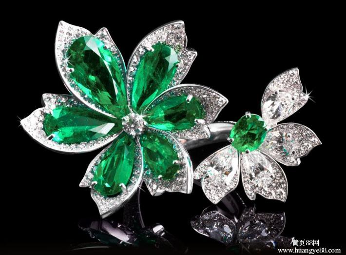

季风缕缕，心香几瓣流年里
——作者：黄结东
季风缕缕，心香几瓣流年里。见到的总比得到的多，而刻骨铭心的记忆，一定是人一生中最沉甸却又最值得收藏心底的珍宝！ ——题记
岁月在一季季风雨中轮回，渐远的人生路途，你我或懵懂，或冲动，或迷茫，或成功，或失败······ 一步步丈量到今天。在那些似水平淡的日子里，有如烟飘逝的惊喜，有香暖意趣飞扬的澎湃，把人生的行囊，塞得满满的。回拂那一季季岁月风雨，回念那一掬掬满满的心事，心生瓣香，随着流水的光阴，弥散在如烟的岁月里。春雨带走寒冬，夏花笑绽热情，秋枫映红旷野，冬雪覆盖记忆。落寞的时光里，常常梦呓逝去岁月里的喜怒哀乐，俏俊风华。
庆幸没有偏离一个普通人正常的行迹，没有搁浅、没有走失在滚滚红尘万紫千红的迷离幻景中，而是一日日在书的世界里，在熙熙攘攘的人海里，感怀喜悦，糅发希冀，找寻着各自所谓的人生；也许有的人满载而归走上了成功之路，也许有的人在前行路上，迷失了自己；也有的人背离了曾经追寻的美好……各种各样的归宿，都成了美好或懊悔的记忆。可是我们自身而言，我们得到了或许很多，但也许失去的也很多吧。( 文章阅读网：www.sanwen.net )
Partricia Pania never wanted to be a national public figure. All she wanted to be was a mother and a homemaker. But her life was turned upside down when a motorist district by his cell phone, ran a stop sign and crashed into the side of her car. The impact killed her two-year-old daughter. Four months later, Partricia reluctantly but courageously1 decided2 to try to educate the public and to fight for laws to ban drivers from using cell phones while a car is moving. She wanted to save other children from what happened to her daughter. In her first speech, Partricia got off to a shaky start. She was visibly trembling and her voice was soft and uncertain. But as she got into her speech, a dramatic transtormation took place. She stopped shaking and spoke3 with a strong voice. For the rest of her talk, she was a forceful and compelling speaker.She wanted everyone in the audience to know what she knew without having to learn it from a personal tragedy. Many in the audience were moved to tears, and to action.
似水如花的流年里，你也许一个人曾站在浓荫下，透过片片绿叶的缝隙，抬头窥望蓝天白云，思绪随清风飞扬，你似乎看到那天边一个人如花的笑容，灿烂到看不清眼前的路。你也许独步江边，清澈如镜的江水，倒映着你风华若玉的神采，偶尔顺手捡几块鹅卵片，飘飞江面，泛起一波波涟漪，这涟漪一同把你的美丽寄去向往的天地；你也许曾静扶楼栏，远眺青山绿水，扶摇情愫；平心悠读山林鸟语，唱和起心底那首儿时妈妈长哼的童谣······
但更多的是，与要好的几个同学或朋友，谈天论地，大话起你我的所见所闻，你我的爱与被爱，你我的过去与未来······ 我想啊，那时大家都是意气风发，一个个像站在江南石桥上的士大夫，情怀美好，希翼如水洁，眼前总是一道道亮丽而精彩的风景，即使风吹日晒也无怨的执着！而如今，这些只能留在现实的土壤里，成了回想那些曾经说的地老天荒的故事了。
有限的生命在时间的长河里千转百回、随波逐流，总有尽头。遍览尘世浮华、云舒云卷；渐渐淡漠、习惯了泥沙俱下的东流水奔腾入海，平淡在日复一日的工作单位——家的来回重复之中，随波逐流在世俗生活里。但有幸的是，在流年岁月中，确实有宝石在浅浅的河床熠熠生辉。你是老师，把一生中最美好的青春年华释放于校园讲台上，一点点光、一寸寸热的连绵不断，布泽了一拨又一拨的童生学子，放飞了一个又一个青春的希望；你是舞者，舞开了一出出精彩的节目，靓丽了一段段精彩的人生；你是下海弄潮人，在浪平风静间，波涛汹涌中，搏击出一个个幸福的港湾······ 这一切，都是一段盈满回声的青涩时光，清澈透明。循着时间经脉自然走向的回放，被努力忆起、搅动的尘封往事，混同金属的质感，在耳旁常常隐约甜甜的响起。
一个个春秋的轮回，一缕缕季风拂过，我们的时光似乎就这么平淡流逝。不过，在这平平淡淡的流淌中，会看到那些随处丢弃的石子，在来回的路上闪耀着点点星光，虽不成大器，但也为自己平淡的岁月增添点色彩吧！要知道，一汪水流，宁静的看着生活的我们，在它落满花瓣的时候流向了不知名的沟沟壑壑，你我也就是这水流中的那一滴，最终腐烂于歌舞升平的大海，蒸发消殆，云霄空宇。所以说，当无路可退的时候才明白，其实生活的本身只是要求我们生下来，活下去。我们将生活来一个概括，那就是：安逸了今天的生活，却忘不了昨日的伤痛；拾起昨日的痛，懊悔的心如冷水浇在头上，有一种从脑凉到心的感觉，会让人觉得这样的色彩让眼前的生活失去了光泽，心也在阵阵隐痛的折磨里忘记了曾经的美好。人生记忆不必太复杂，只须简单记住岁月、流年、萤火、春光……所带来的意义就足矣！
星转斗移、物是人非，唯有自然、端庄的生命之树常青恒绿。心静留香，静谧于一得一失中，静怡于那根须扎实在每一寸的一方水土中，坐看潮涨潮落，笑观云卷云舒，享受一缕缕春风的轻拂。于惊雷声中欣赏闪电的光彩，在漂流舟上感受波涌的惊彩，从高云间收取多色的虹彩！
缕缕季风拂过，我们的人生流年，也就是那么一回事：一路绿树残云，一路花红潭深。回眸嗅去，还是瓣瓣心香好。因为，心静如活水，长流不息啊！